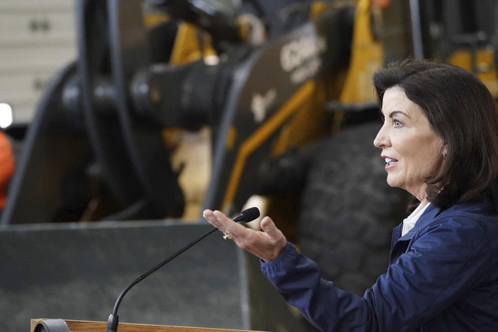

“I think this is a great opportunity for us to rebuild,” Gov. Kathy Hochul said, characterizing intraparty clashes as disagreements that could easily be settled. | Derek Gee/The Buffalo News via AP
Hochul's victory created another hurdle: Democratic unity in New York
Hochul heads into her first full term facing factions of moderates, progressives, establishment and fringe groups who remain divided on public safety, housing and inflation.
By ANNA GRONEWOLD
NEW YORK — Gov. Kathy Hochul won an unexpectedly competitive election as feuding Democrats reluctantly set aside their ideological differences to avoid squandering the governorship.
Her next challenge will be trying to replicate that peace.
Hochul heads into her first full term facing factions of moderates, progressives, establishment and fringe groups who remain divided on how the party should combat public safety issues, a housing crisis and the effects of inflation. The Democrats are also at odds over whom to blame for their brutal election showing, in which they lost three House seats as Hochul won a narrow victory over Republican Rep. Lee Zeldin.
While some Democratic governors, like in Minnesota, Michigan and Pennsylvania, are basking in the glow of party gains in their statehouses, Hochul has to mend fences.
“I think this is a great opportunity for us to rebuild,” Hochul said Monday after an event in Buffalo, characterizing intraparty clashes — many of which originated long before her tenure — as disagreements that could easily be settled.
Hochul, a moderate from Buffalo, has taken a positive outlook on the election results — pointing to Democratic wins in the state Senate, Assembly and for the rest of New York’s statewide elected officials. But she acknowledged the state party is not “the powerhouse that it should be” in a heavily blue state. Democrats hold all state offices and control the state Legislature.
“There’s a lot of different ideas for how to get to basically the same result, and I’m the person who has to be responsible for that,” Hochul, the first woman elected governor in New York, said. “I gratefully own that mantle.”
.jpeg)
Congresswoman Nydia M. Velázquez, D-NY, right, and Congressman Hakeem Jeffries, D-NY, center, meet with New York incumbent Democratic Gov. Kathy Hochul, left, as she makes a campaign stop on Election Day, Nov. 8, 2022, in Brooklyn. Hochul will be looking to build party unity as she takes a full term next year. | Bebeto Matthews/AP Photo
Whether she can do that in a way that will avoid even sharper disappointment in 2024 remains an open question, especially as she continues to back state party chair Jay Jacobs despite a cavalcade of Democrats — at least 750 of them — pointing at his leadership as the problem.
Any immediate change to Jacobs’ role would likely be at her direction; Jacobs, who has been party chair since 2019 and also held the job from 2009 to 2012, was reelected for another two-year term in September. Progressive democrats have floated names such as strategist L. Joy Williams, who heads the Brooklyn NAACP, or outgoing Rep. Mondaire Jones as the kinds of candidates they’re looking for.
Jacobs, who is also head of the Nassau County Democratic Party, gave his support to Hochul after she took over from former Gov. Andrew Cuomo, who resigned amid sexual harassment allegations in 2021. Jacobs rallied the party around her reelection campaign.
He’s been dismissive of some on the left, characterizing progressives like Rep. Alexandria Ocasio-Cortez as idealists who are naive about the kind of work and compromise needed to achieve results. He refused to back Democratic socialist India Walton in the Buffalo mayor’s race last year, although she was the party’s nominee, and he had to apologize for making racist remarks defending his choice.
Jacobs said Wednesday that the state party isn’t to blame for the Election Day losses, saying the committee isn’t responsible for running legislative or congressional races — only for providing resources and volunteers on the ground, which he said it did.
“When you don’t have the authority for certain things, then I don’t feel you should take the responsibility for the outcome when it doesn’t go your way,” he said.
Groups on the left have expressed disbelief that Jacobs still holds the role, especially after being recruited as part of a frantic push to turn out voters for Hochul. Even Ocasio-Cortez, who has been no fan of moderate Democrats or Jacobs, campaigned with Hochul in the streets of New York City on Election Day.
Meanwhile, Jacobs’ own Nassau County — where even Senate Majority Leader Chuck Schumer lost to his little-known GOP challenger despite Schumer’s resounding victory statewide — was fertile ground for Republican gains this year.
“So we’re expecting for him to build a party across the state of New York and in these complicated times, while in his backyard he got completely demolished?” Bronx state Sen. Gustavo Rivera said in an interview. “Just from a straight up tactical perspective, how does that make any damn sense?”
Hochul’s efforts to rebuild should rely on individuals who have not alienated key portions of voters and organizers, Rivera suggested.
“From a longer term strategic perspective, what was clear around the country? What made sure that Democrats were able to not get completely slaughtered?” Rivera said. “It was young people, it was progressives.”
“Let’s embrace them,” he added, “by embracing people that actually bring them into the party.”
.jpeg)
One of the questions facing Gov. Kathy Hochul is whether she can unify New York Democrats and keep party chairman Jay Jacobs, who many leaders want out. | Seth Wenig/AP Photo
Many Democratic lawmakers attending the party’s annual SOMOS conference in San Juan in the days after the election were non-committal about whether Democratic alignment in the final days of the campaign could easily extend into the new year, and they expressed irritation that the state party’s campaign efforts were scattered enough to require bailing out Hochul’s campaign in the first place.
“I am optimistic that we are the kind of party that comes together to encourage and excite New Yorkers to vote,” Assemblymember Catalina Cruz, a Queens Democrat, said when asked whether party unity could continue once the threat of a Republican governor had passed. “I can tell you that hearing from many of my community members — they were not even aware there was an election.”
Hochul’s style of governing has so far been popular among other elected officials, who cite her as a productive and collaborative leader, especially in contrast to her predecessor, Cuomo, whose top-down governing style had worn out its welcome with Democrats in Albany and led to a yearslong feud with then-Mayor Bill de Blasio.
Hochul has maintained a decent relationship with Mayor Eric Adams, despite him pressing the state for more action on New York City’s crime problem — which was a key issue that Zeldin and Republicans in House races effectively used to win over voters.
“I think she’s done an amazing job under very difficult circumstances — difficult to the extent that she just got here and the fact that it is a mammoth government,” Assembly Majority Leader Crystal Peoples-Stokes, a Buffalo Democrat, said during an interview last month. “I think that she got up to speed very quickly. I think she’s put some amazing people in place to head up the work that she has to do, and I’m impressed with a lot of the women that she’s put in place to handle major pieces of her administration.”
But being a good governor does not automatically extend to being a dynamic party leader. Hochul has been adamant that she will not replicate the strong-arm style of Cuomo, who insisted on controlling the state party and state government.
She should replicate what she’s done in her administration by replacing Jacobs with someone — or multiple people — who can focus entirely on rebuilding bridges, said Democratic communications strategist Stu Loeser, who was a top aide to former New York City Mayor Mike Bloomberg.
They should have experience, energy and, “most important, credibility” across party factions, he said.
“It will take money, but she’s proven that she’s an exemplary fundraiser,” Loeser said. “And it will take talent to build a team. No one person can handle our loss of Hispanics in the suburbs and our lack of operations in NYC and every other challenge.
“But a good team leader with resources and support from the boss can do it,” he added. “It’s exactly what she’s done in the government; it’s exactly what she’s great at.”